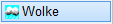
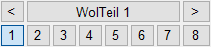
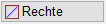
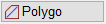
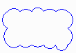
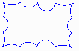
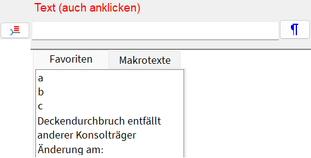
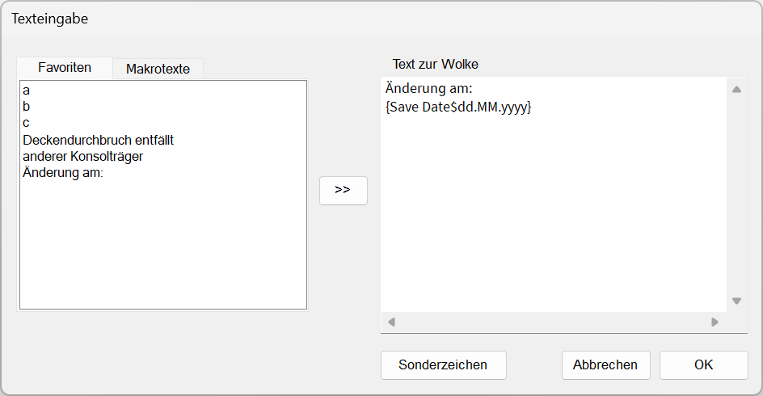
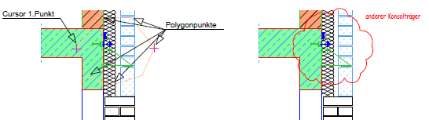

")
")
Alternativer Aufruf: mittlere Maustaste auf eine Wolke.
Einen beliebigen Bereich mit einer Wolkenform umrahmen, z. B. um einen geänderten Zeichenbereich zu verdeutlichen.
Optionen |
Beschreibung |
|---|---|
|
Stiftauswahl. Falls Stifte als Favoriten aktiviert wurden, werden diese an erster/oberster Stelle angezeigt. |
|
Übernimmt die Stiftnummer und die Texteinstellungen (Schriftart, Textgröße, Breitenfaktor) der angeklickten Wolke. Wenn der Text mit einer anderen Stiftnummer abgesetzt wurde, wird beim Anklicken des Textes die Stiftnummer der Wolkenform übernommen. |
|
Individuelle Textgröße (wird auf Textgrößennummer 8 gespeichert) bzw. individuelle Textbreite. |
|
Auswahl des Schrifttyps. |
|
Auswahl der Textgröße. |
 |
Auswahl der Wolkenform über Ausklappliste oder Formnummer. |
  |
Rahmenlinien rechteckig / polygonal. |


So wird's gemacht:
§Führen Sie einen der folgenden Schritte aus:
a)Klicken Sie mit der Elementauswahl Polygo mehrere Punkte an, die den Bereich umschließen. [1.Punkt]; [2.Punkt].
Bestätigen Sie mit Rechtsklick.
b)Ziehen Sie mit Rechte einen Rahmen um den Bereich.
§Die Wolke wird an den Cursor gehängt.
Mit den Optionen / unter der Abfrage [Lage] wählen Sie die Darstellung der Wolke:
 |
 |
Positiv |
Negativ |
§Schieben Sie die Wolke an die gewünschte Stelle und legen Sie sie mit Linksklick ab. [Lage].
§Bei der Texteingabe stehen Ihnen verschiedene Eingabe-Möglichkeiten zur Verfügung. [Text (auch anklicken)].
Bestätigen Sie die Texteingabe abschließend mit der Eingabetaste.
a)Freie Texteingabe:
Geben Sie den Text ggf. mit Sonderzeichen  in die Eingabezeile ein.
in die Eingabezeile ein.
b)Keine Texteingabe:
Wenn Sie das Eingabefeld leer lassen und bestätigen, ist die Aktion beendet, und Sie können eine weitere Wolke zeichnen.
c)Favoritentext auswählen:
Klicken Sie einen bereits eingetragenen Text oder Favoritentext in der Auswahlliste an. Die Favoritentexte werden an oberster Position angeboten. Danach folgen die zuletzt eingetragenen Texte. Die angebotenen Favoritentexte für Wolken können in den Systemdaten definiert werden.
 |
d)Makrotext auswählen:
Klicken Sie auf die Überschrift Makrotexte, um sich die Liste anzeigen zu lassen. Klicken Sie einen Makrotext an. Der Makrotext wird in der Form {Makrotext} in die Eingabe übernommen. In der Zeichnung wird dieser nach dem Platzieren des Textes durch den tatsächlichen Inhalt ersetzt. Wenn Sie den Mauscursor über einen Makrotext in der Liste bewegen, wird Ihnen der Textinhalt als Tooltip angezeigt. Siehe auch: Verwenden von Makrotexten.
e)Mehrzeiligen Text einfügen:
Klicken Sie auf  , um einen mehrzeiligen Text zu erzeugen. Öffnet den Dialog Texteingabe.
, um einen mehrzeiligen Text zu erzeugen. Öffnet den Dialog Texteingabe.
 |
Geben Sie unter Text zur Wolke den gewünschten Text ggf. mit Sonderzeichen ein. Mit der Eingabetaste fügen Sie einen Zeilenumbruch ein. Um einen vorhandenen Text aus der linken Spalte an die Cursorposition zu setzen, doppelklicken Sie den Text an. Sie können den Text auch markieren und auf  klicken. Bestätigen Sie die Eingabe, indem Sie auf OK klicken.
klicken. Bestätigen Sie die Eingabe, indem Sie auf OK klicken.
f)Text in Eingabe übernehmen:
Klicken Sie einen auf der Zeichnung vorhandenen Text an, um diesen in die Eingabe zu übernehmen. Nach dem Anklicken des Textes gelangen Sie direkt zur Ausrichtung des Textes (Winkeleingabe). Textfelder können nicht übernommen werden.
g)Sonderzeichen einfügen:
Klicken Sie rechts neben der Abfrage auf . Geben Sie im Dialog die entsprechenden Sonderzeichen und ggf. weiteren Text ein. Bestätigen Sie entweder mit Weiter, dann gelangen Sie zur nächsten Abfrage, oder mit Zurück zur Texteingabe, dann können Sie zusätzlichen Text einfügen. Beachten Sie die Erläuterungen zum Einfügen von Sonderzeichen.
§Geben Sie für die Ausrichtung einen Winkel ein. [Winkel].

|
||||||


§Verschieben Sie den Text an die gewünschte Stelle und platzieren Sie ihn mit Linksklick. [Lage].
Sie können sofort eine weitere Wolke zeichnen.
 |
Siehe auch:
Zugehörige Referenzen: